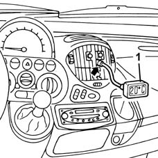
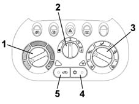

5040A Checking operation of air conditioner (temperature)
- Path
- Test > 50 AUXILIARY UNITS > 5040 AIR CONDITIONING CASING AND COMPONENTS > 5040A Checking operation of air conditioner (temperature)
- Kind
- test / check procedure
- Applies to
- all engines; all production periods
- Interactive page
- https://sloeber94.github.io/elrnDB-fMltpl/en/#/2892397
Applies to: all engines; all production periods
Close all the doors and windows.
Set the gearbox to neutral.
Start the engine and run it at 1250 - 1300 rpm.
Open the central air vents. Place a thermometer probe inside.

Set the temperature selector to the coldest setting.
Set the fan speed selector to "2".
Set the distribution selector to the "front" position.
Switch on the air conditioner (A/C button pressed and LED on).
Switch on recirculation (button pressed and LED on).

Check that within 2-4 minutes the thermometer's temperature reading reaches the indicated values and stabilizes at 8°-11°C.